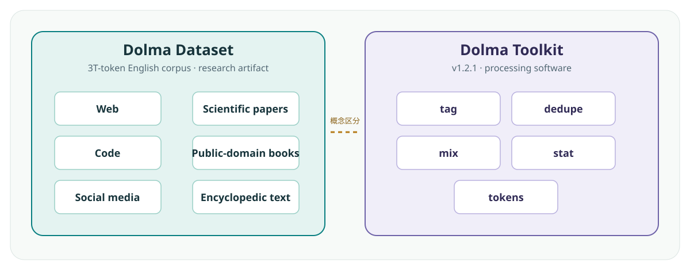

MODULE 24 / LLM DATA ENGINEERING
Dolma 工具链全解析
先区分 Dolma 三万亿 token 研究语料与 Dolma Toolkit 软件，再按 v1.2.1 官方文档理解 tag、dedupe、mix、stat 和 tokens 命令。
Dolma Dataset 是用于 OLMo 研究的开放预训练语料；Dolma Toolkit 是处理文档、标注属性、去重、混合和 tokenization 的软件包。两者有关联，但版本号、交付物和使用许可不能混为一谈。
Dolma Dataset：公开语料是研究对象，不是工具版本

Dolma 论文介绍了一个约三万亿 token 的英文语料，来源包括网页、科学论文、代码、公共领域书籍、社交媒体和百科内容。它的目标之一是为 OLMo 训练和预训练数据研究提供可检查的语料与中间处理信息。
Hugging Face 数据卡列出 v1、v1_5、v1_6、v1_6-sample、v1_5-sample 和 v1_7 等版本；当前默认版本为 v1_7，于 2024-04-15 发布并用于训练 OLMo 7B-v1.7。数据卡也明确区分全量数据 token 计数与考虑采样比例后实际用于训练的 token 数：不能把全量语料规模直接当作某个模型的训练 token exposure。
Dolma Toolkit：v1.2.1 的命令边界
本章软件示例固定在 dolma==1.2.1。该 release 的 CLI 包含六类命令：tag、dedupe、mix、list、stat 和 tokens。先用 dolma --help 与子命令的 --help 检查当前安装版本的参数，不要把其他版本的博客命令直接复制过来。
python -m pip install "dolma==1.2.1"
dolma --help
dolma list| 命令 | 职责 | 产物 / 注意事项 |
|---|---|---|
tag | 运行语言、长度、PII、质量等 tagger | 写出文档或文本 span 的 attributes；tagger 输出是信号，不自动等于最终 keep/drop 决策。 |
dedupe | 按文档键或段落标记重复 | 使用 Bloom filter；存在 false positives，需要记录参数和误报权衡。 |
mix | 合并 streams、应用 include/exclude 条件和 span 替换 | 输出新的文档集合；必须保存配置文件和输入版本。 |
stat | 分析数据属性分布 | 用于检查来源、语言、长度或 tag 分布。 |
tokens | 按指定 tokenizer 统计或写出 token 数据 | tokenizer 名称与 revision 必须固定，才能比较 token budget。 |
list | 列出可用 tagger | 实际可用 tagger 取决于安装版本与可选依赖。 |
按“标注 → 去重 → 混合 → tokenization”组织流程
官方 v1.2.1 getting-started 文档用 Wikipedia 演示了一个可复现的命令序列。先准备固定日期的输入快照，再运行 taggers，随后计算重复段落属性，最后由 mixer 根据属性过滤并输出文档，最后按指定 tokenizer 处理 token。
# 1. 为文档和段落生成属性
dolma tag \
--documents "wikipedia/v0/documents/*" \
--experiment audit \
--taggers random_number_v1 char_length_with_paragraphs_v1 \
--processes 8
# 2. 标记重复段落（Bloom filter 可能产生 false positives）
dolma dedupe \
--documents "wikipedia/v0/documents/*" \
--dedupe.paragraphs.attribute_name "bff_duplicate_paragraph_spans" \
--bloom_filter.file "/tmp/dedupe.bin" \
--bloom_filter.estimated_doc_count "6000000" \
--bloom_filter.desired_false_positive_rate "0.0001" \
--processes 8
# 3. 用配置文件混合并过滤
dolma -c examples/wikipedia-mixer.json mix --processes 8
# 4. 固定 tokenizer 后统计 / 输出 token
dolma tokens \
--documents "wikipedia/example0/documents/*.gz" \
--tokenizer.name_or_path "EleutherAI/gpt-neox-20b" \
--destination "wikipedia/example0/tokens" \
--processes 8以上命令是官方 v1.2.1 文档中的参数模式示例，输入路径、并行进程数和 Bloom filter 规模只是该示例的运行配置，不是生产集群的通用默认值。实际运行应先用 --dryrun 或小样本验证配置，再扩大规模。
Bloom filter 的“可能重复”不是精确事实
Dolma 文档明确说明其去重使用内存 Bloom filter，因此存在 false positives：某个从未出现过的项目也可能被误判为已出现。Bloom filter 适合高吞吐地标记候选重复，但不能把一次命中解释为数学上确定的重复关系。
因此，设计去重策略时要保存预计文档数、目标 false-positive rate、key 定义、输入顺序、Bloom filter 文件和处理配置。对误删成本很高的语料，应加入精确二次校验或人工抽样，估计误报带来的数据损失。
文档采样比例不等于 token 暴露比例
多源混合时，stream 的文档数、字节数和 token 数可能相差很大。若第 个来源实际贡献 个 token，则其 token share 为：
文档采样概率只有在长度分布、截断、重复曝光和 packing 等条件得到控制时，才可能近似目标 token share。应从目标语料版本和实际 tokenizer 重新计算，不要把某个示例的固定来源百分比写成通用配方。
版本、许可与来源边界
- 论文：Dolma corpus 论文发表于 ACL 2024，描述的是数据集设计和研究结果。
- 工具包：本章 CLI 与配置说明绑定 Dolma Toolkit v1.2.1（release 日期 2025-07-07）。
- 数据卡：当前默认语料版本为 v1_7；使用时记录确切 snapshot / version。
- 许可：数据卡标注 ODC-BY，并明确要求同时遵守原始数据来源的许可与使用条款。公开可下载不等于所有来源都可无限制再分发。